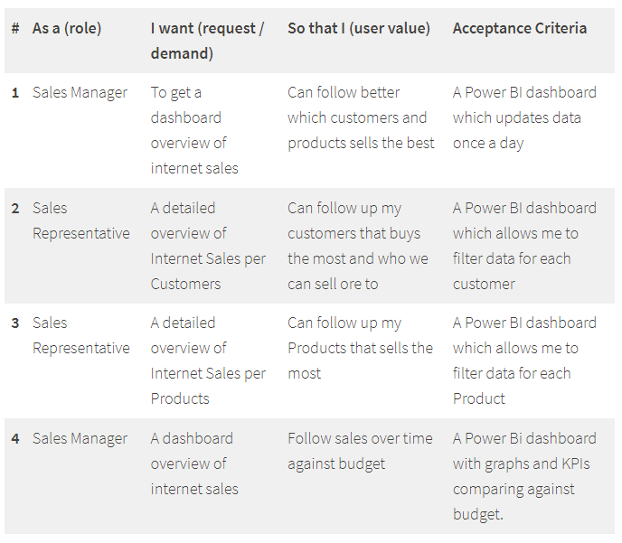
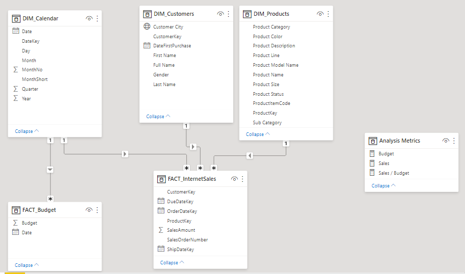

Sales Management
Business Request & User Stories
The business request for this project was an executive sales report for sales managers. Based on the request that was made from the business, we followed user stories (were defined) to fulfill delivery and ensure that acceptance criteria were maintained throughout the project.
Data Cleansing & Transformation (SQL)
To create the necessary data model for doing analysis and fulfilling the business needs defined in the user stories, the following tables were extracted using SQL.The sales budget data was provided in Excel format and was later connected (by data modeling) to the data extracted from the database.
Below are the SQL statements for cleansing and transforming necessary data.
DIM_Calendar:
-- Cleansed DIM_Date Table --
SELECT
[DateKey],
[FullDateAlternateKey] AS Date,
[EnglishDayNameOfWeek] AS Day,
[EnglishMonthName] AS Month,
Left([EnglishMonthName], 3) AS MonthShort, -- Useful for front end date navigation and front end graphs.
[MonthNumberOfYear] AS MonthNo,
[CalendarQuarter] AS Quarter,
[CalendarYear] AS Year --[CalendarSemester],
FROM
[AdventureWorksDW2019].[dbo].[DimDate]
WHERE
CalendarYear >= 2019
DIM_Products:
-- Cleansed DIM_Products Table --
SELECT
p.[ProductKey],
p.[ProductAlternateKey] AS ProductItemCode,
p.[EnglishProductName] AS [Product Name],
ps.EnglishProductSubcategoryName AS [Sub Category], -- Joined in from Sub Category Table
pc.EnglishProductCategoryName AS [Product Category], -- Joined in from Category Table
p.[Color] AS [Product Color],
p.[Size] AS [Product Size],
p.[ProductLine] AS [Product Line],
p.[ModelName] AS [Product Model Name],
p.[EnglishDescription] AS [Product Description],
ISNULL (p.Status, 'Outdated') AS [Product Status]
FROM
[AdventureWorksDW2019].[dbo].[DimProduct] as p
LEFT JOIN dbo.DimProductSubcategory AS ps ON ps.ProductSubcategoryKey = p.ProductSubcategoryKey
LEFT JOIN dbo.DimProductCategory AS pc ON ps.ProductCategoryKey = pc.ProductCategoryKey
ORDER BY
p.ProductKey ASC
FACT_InternetSales:
-- Cleansed FACT_InternetSales Table --
SELECT
[ProductKey],
[OrderDateKey],
[DueDateKey],
[ShipDateKey],
[CustomerKey],
[SalesOrderNumber],
[SalesAmount]
FROM
[AdventureWorksDW2019].[dbo].[FactInternetSales]
WHERE
LEFT (OrderDateKey, 4) >= YEAR(GETDATE()) -2 -- Ensures we always only bring two years of date from extraction.
ORDER BY
OrderDateKey ASC
Data Model (Power BI)
Below is a screenshot of the data model after cleansed and prepared tables were read into Power BI. This data model also shows how FACT_Budget has been connected to FACT_InternetSales and other necessary DIM tables.
Sales Management Dashboard (Power BI)
The finished sales management dashboard with one page with works as a dashboard and overview, with two other pages focused on combining tables for necessary details and visualizations to show sales over time, per customers and per products.